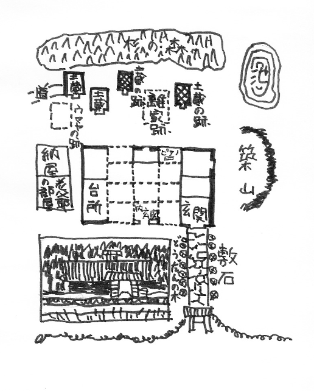

一 家老屋敷
その不可解な死を遂げた判事の棚田晃一郎氏だけは子供の時分からよく知っています。私とは七つ八つくらいも年が違っていたかも知れませんから、学校や遊び友達が一緒だったというのではありませんが、棚田の家は広い
田圃を
距てて私の家とちょうど向合いになっていました。私の父はその頃この小さな町の農事試験場の技師をして、官舎に住んでいましたが、田圃を距てた
埃っぽい昔の街道の向う側に城のように
巍然たる石垣や土手をつらねているのが棚田の家だったのです。
もともと棚田の家は、この町の旧藩の
城代家老の家柄といわれているだけに、手狭な私の家とは違って敷地も広ければ、屋敷もあたりを圧して
宏壮を極め、昼でも暗い
鬱蒼たる
竹藪に沿うて
石礫だらけの坂道を登って行くと、石垣を畳んだ大きな土手の上には
黄楊の垣根が竹藪と並行に小一町ばかりも続いているのです。そして広々とした石段の向うに、どっしりした
冠木門がそびえています。
苔の生えた
御影石の敷き石の両側に
恰好のいいどうだんを植えて、式台のついた古風な武家づくりの玄関といい、横手に据えられた
天水桶代りの青銅の鉢といい、見上げるような屋の棟や、その
甍の上に
蔽いかぶさった深い杉の森といい、昔
裃を着けた御先祖が奥方や腰元や若党たちに見送られて供回り
美々しく登城する姿なぞもそぞろに
偲ばれましたが、それだけに腰元もいなければ供回り若党も一切なく、母親と女中と
下男夫婦と、いつ行って見てもひっそりと静まり返っている小人数の棚田家というものは、何か大家の没落したような一種の
侘しさを子供にも伝えずにはいませんでした。
しかも
淋しい感じを与えたのは、何もそんな大きな屋敷や、古い石垣のせいばかりではありません。子供心にも何ともいえず薄気味悪かったのは、祖母からしょっちゅう聞かされた棚田の先祖の話だったのです。
棚田の家の裏手に大きな杉の森がそびえていることは、今も言ったようなわけでしたが、この森の中には、昔から土蔵がいくつか飛び飛びに並んで、奥庭の
築山の裏手には、真っ青な水の
澱んだ広々とした沼があって――それも一個人所有の池とも思えぬくらい広々とした沼があって、その
涯は一面の雑木林が野原の中へ溶け入っているのです。この野原へ出ると、
芒や
茅の
戦いでいる野路の向うに、
明神ヶ
岳とか、
大内山という島原半島の山々が紫色に
霞んで、中腹の草原でも焼き払ってるのでしょうか、赤い火がチリチリと
煙っているのが夏の夕方なぞよく
眺められました。祖母の言うのには、棚田さんへ遊びに行っても、裏の杉の森や、池の近くへはどんなことがあっても行ってはいけないよ。あすこには昔仕置き場があって、殺された人の
怨霊が迷ってるから、幽霊が出るんだよ、と何度やかましく注意されたかわからないのです。祖母の言うのには、棚田の何代目かの先祖に――確か四代目とかいったようでしたが、
癇癖の強い、とても残忍な性質の家老があって、人を殺すことなぞ、虫ケラ一匹ひねり
潰すほどにも感じてはいなかったというのです。奥方は早くに亡くなって、お気に入りの美しい腰元が身の回りの面倒を見ていましたが、この腰元さえも、自分のいうことを聞かないといって、責めて責め抜いた挙句の果てに、手討ちにしてしまったというのです。
今でも私が覚えているのは祖母の話を聞きながら、どうしても子供の私の
腑に落ちなかったのは、なぜこの腰元を手討ちにしてしまったかということでした。高が自分の言うことを聞かないくらいのことで殺してしまわなくてもいいじゃないか！ と不満に思わずにはいられなかったのでしたが、大人になるに従って祖母が細かく説明し得なかった、その辺の事情も、ハハア、なるほどな！ と飲み込めるようになってきました。幼い私に聞かせるのは
憚って、祖母が言葉を濁していた、そのお手討ちというのも横恋慕を聞かれなかった家老の
嫉妬心からだったのでしょう。が、子供にとって事実の真相なぞはどうでもよろしいことだったのです。
皺だらけの白髪の祖母が思い入れよろしくあって……こう細い手を伸ばして責め
折檻する時の顔の怖さといったらありません。叫ばんばかりの気持で、私は祖母の
袂を
掴んでいましたが、ともかくその何代目かの主人の勘気に触れて、美しい腰元は責め殺されてしまいました。しかも責め殺したことが世間へ
洩れるのを憚って、家老は女の実家から何度問い合せがあるにもかかわらず、どうしても事の真相を明かしません。お家の
法度を破って男を
拵えて、
逐電した不届き至極な奴め、眼に入り次第成敗いたしてくれん！ と
猛りたつようなことばかり並べたてて、表面を
繕っていました。武家には頭の上がらぬ昔のこと、娘のそういう不都合な所為のあるはずもない、これには何か深い事情があることと思っても、並ぶものない権力者の御家老に向って、そういうことの面と言えるはずもなし、女の家では泣き寝入りをしてしまいましたが、どうしても
［＃「どうしても」は底本では「とうしても」］諦めることのできなかったのは、その腰元の
許嫁だったのです。この許嫁は、子供の頃から寺へやられて出家していましたが、この坊さんだけは真相を聞かぬ限り何としても、自分の許嫁の
失踪には諦めがつかなかったのです。逐電したならしたで、どうかその
顛末を聞かせて欲しい、とたびたび棚田の屋敷へ足を運んで来ましたが、もちろん当主が
逢おうはずもありません。いい加減なことばかり並べたてて追っ払っていました。が、この残忍な、
我儘な家老の評判はあちらこちらに響き渡っていましたから、ハハア！ と僧にも
頷けるものがあったかも知れません。が、確かに許嫁は殺されているとは思っても、実否もわからないことですし、無念を晴らしてやりたいとは思っても、相手は殿様を除いては土地随一の威権
赫々たる御家老では力のない僧侶の身には手も足も出るものではありません。
思い余ってある時、この坊さんは、秘蔵の一管の尺八を携えて、家老の屋敷へ忍び入って来たことがありました。家老はちょうど御殿へ出仕して留守でしたが、少し頭のおかしくなった坊さんは、池の岸によろよろとそびえ立ってる松の根方に腰を降して、携えて来た尺八を取り出しました。静かにこの屋敷の内のどこかで死んでいるであろう許嫁の腰元の魂に、せめては昔から好きであった、この尺八の音を聞かせてやりたいと思ったのでしたが、やがて歌口を湿して吹き出してきた曲は、泣くように、
咽ぶように、力ない人間の
不甲斐なさを天に訴えているとしか見えません。
「その音色が澄んでね、人の心の中へ溶け入って事情を知らない人が聞いても、しんみりと涙の
湧いてくるような気持がする時分にね、御家老が御殿から帰っていらしたんだよ」
「ほう、誰か尺八を吹いてるな」
と身につまされるような気持で、家老は馬から降りてしまいました。いつもに似ず、静かに静かに腕を組みながら、ソロリソロリと長い敷石道も忍びやかに、出迎えの人たちも眼顔で制して、居間へはいっても障子の陰に突っ立ったまま、じっと池の方へ聞き耳をたてていました。やっと尺八を吹き終えた坊さんは、笛を袋へ納めると、眼に一杯涙を
湛えながら
屹と屋敷の方を
睨みつけていました。
「お高！ これで俺の気持がわかったろう？ どこに眠ってるか知らねえが、成仏してくれよな。行くところへ行きなよ。だが
口惜しかんべえ、なあお高！ 人に
怨みがあるものか、ねえものか、鬼になって棚田の家に
仇を返してやれ！ 生き代り生まれ代って
祟りをしてやれ。棚田大膳の家に三代たたぬ間に見ろ！ この屋敷にぺんぺん草を生やしてくんど！」
そして僧はそのまま野原の方へ歩みを移してしまいましたが、涙ぐまんばかりに凝然と耳を澄ませていた、
我儘な家老の心に、また途端に残忍とも、酷薄とも言わん方ない気持が
蘇ってきました。こんな生若い
許嫁があったばかりに、自分のいうことを聞かなかったのかと思うと、怒りに眼が
眩んできたのです。
「
怪からん奴じゃ、無礼千万な！ 勝手気儘に執権の屋敷へはいりおって！ 宗八、剛蔵、確之進！ 追い
駈けて行って、
搦め捕ってこれへ引き据えエ！」
青筋たてた悪鬼のような主人の
下知に、早速家来たちは僧の後を追い駈けましたが、骨強い、おまけに反感を持って、頭のおかしくなっているこの僧が、なかなか家来たちのテゴチにおえるものではありません。主人が主人なれば、家来もまた家来……主人を
嵩に着た家来たちのために、到頭
高手小手に締め上げられてしまいました。
「
殴ったり
蹴ったり、散々に責め
嘖んだ挙句、あろうことかあるまいことか！ しまいには、その坊さんにね、
此奴が腰元をそそのかして、主人の家の金を持って逃げようと
企んだなぞと
濡れ
衣を着せて、殺してしまったんだよ。おまけに、
酷いことをしたんだよ。ほら、お祖母さんが一人で行ってはいけないよと、口癖のように言っている池があるだろう？ あの池の回りにね、昔はお仕置き場があったんだが、そのお仕置き場の回りにぐるっと
竹矢来を結って……」
何月何日には見せしめのために、
火焙りの刑を処すると、近郷近在に触れを回しました。そして大勢見物人たちの
犇めいている中で……、
「高手小手に締められた坊さんの回りに、山ほど
薪を積み上げて、生きながらの火焙りにしてしまったんだよ。薪から着物に火が燃え移って、ジリジリジリジリと身体の
膏が燃え出す。七転八倒の苦しみをして、『己れ棚田大膳！ 暴虐の限りを尽し、無実の罪を
被せおって！ 人に怨みがあるものかないものか！ 見よ、見よ、ここ三代が間に
汝の屋敷にぺんぺん草を生やしてくれん！』『ええ、
喧しいやい、ソレ、もっと薪を
焼べろ！』と到頭焼き殺してしまったんだよ」
幼い私は
溜息をつきながら祖母を見上げていました。
「ところがどうだろう、人の一念というものは恐ろしいもんでね、その真っ黒に燃え切って、坊さんの身体がもういいだろうと薪を取り
除けた途端、大膳めがけて二足三足歩き出したというんだよ。見物人が顔色変えてワァッと逃げ出す。歩き出したその坊さんの身体が、途端に何かに
躓いて、バタッと倒れて……倒れると同時に、土煙を挙げて粉々の灰になってしまったんだよ。だからお
祖母さんがいつでも言ってるだろう。夕方誰も通らぬ時に、あんなところを一人で歩いていると、今でもその坊さんが
怨めしそうな顔をして、
芒や
茅の向うに、
朦朧と映ってくるんだよ。細い声を出して、モシモシこの辺にお高という腰元の働いている棚田という家はありませんかい？」
と私は
堪らなくなって祖母の
袂の中へ顔を突っ込む。
「ハハハハハハいいんだよ、いいんだよ、もう話はおしまいだよ。
お前があんなところへ行きさえしなければ、そんなに怖いものは出て来ないのだよ」
と祖母は私の頭を
撫でて、怖い話を止めにするのでしたが、全身真っ黒に焼け切ってから、歩き出して、ボロボロの灰になった男というのは、何もあながち、棚田の仕置き場の僧侶に限った話ではありません。後年、私が読んだ講談本にも、豊臣秀吉の家来で、泉州堺の町を焼き払った何とかいう豪気な侍が、
火焙りの刑に処せられた後、眼も鼻も口もない真っ黒けな焼死体になってから歩き出して、倒れたら粉々の灰になったということが出ていたような気がします。こういう怪奇な伝説に、奇怪な物語はつきものかもしれませんが、しかし別段祖母がウソ飾りをつけ加えているらしくもないのです。
いずれにせよ、私が祖母から聞かされて怖がっていた、四、五十年以前のあの上小路あたりの
淋しい景色を思い出しますと、祖母の話してるのは、いわんや、それからさらに百年も二百年も昔のことであってみれば、昼間でも
狐の
啼きそうな、
侘しい山里の武家屋敷の中には、そういう横暴な家老もあれば、また腰元や僧侶がなかったとは、一概には言えぬような気もするのです。が、そういう気味の悪い因縁のついた恐ろしい家の中に育ちながら、平気で暮している髪の真っ黒な眼の涼しい棚田晃一郎という年下の友達を、何か超自然的なもの……いわば神秘に包まれた武家屋敷の中の若様といったような気持で、
眺めていたことだけを今もハッキリと覚えているのです。
二 姉の死
年齢に懸隔がありますから、そうしょっちゅう一緒に遊んでいたというのではありませんが、時々は祖母の戒めも忘れて、棚田の家の奥深くはいり込んで近所の子供と一緒に鬼ごっこなんぞをして遊んだこともあります。そして遊びほうけて、野原へ走り出て、池の端の大木のうつろなぞに隠れているうちに、水の面に
薄らと
夕靄が漂って、ゴウンゴウンと遠くから鐘の音なぞが聞こえてきます。途端にこの辺に棚田という屋敷はありませんかい？ と
耳許で細い声がしたような気がして……今外へ飛び出せば鬼に捕まるということも忘れて思わず表へ躍り出す……。
そうした幼時の思い出の数々を私は持っています。が、村の小学校の四年生の時、父が東京の本省へ転勤になったために、この草深い田舎の生活を棄てて私は東京へ出て来ました。その後二年ばかりもたつと私はさらに父の転任につれて長野へ行き、前橋へ行き、浦和へ行き、この浦和で祖母は七十六歳の高齢で世を去ってしまいました。もちろん大村を離れて以来、口へ出してどうのこうのと、棚田のうわさを言ってたわけではありません。が、恐怖は身に
沁みていたとみえて、大村を立ち去ったことを――というよりも上小路の家を立ち去ったことを、しみじみ喜んでいる風に見えました。
「そんなことをいうと、お前はまたお祖母さんをバカにするかもしれないがね。あの時分は夜が明けても、ほんとうに何だか
鬱陶しい
厭な気持がしてね、気のせいかもしれないけれど誰の顔を見ても何だかこう……気のめいりそうな
憑きものでもしたような顔をして朝から日暮れ方みたいな気がしたよ」
と心から
吻っとしたように、祖母はザブリザブリと
湯槽の中で顔を洗いながら念仏を唱えています。
さて、私が絶えて久しい棚田の晃一郎氏に
逢ったのは、それから何年くらいもたった時分だったでしょうか？ その頃には、父も退隠して、最後の任地であった気候の穏やかな静岡の郊外で、悠々と余生を送っていました。私も大学を卒業して大学病院の実習も終り、一人前の医師になって、久しぶりで静岡の父母の家へ遊びに行っていた時ではなかったかと思いますが、一遍お訪ねしろ、お訪ねしろと母からもやかましく言われていますが、なかなかそんな暇もないんですからと、夏休みで大村へ帰る時にわざわざ晃一郎氏が訪ねて来てくれたことがありました。
子供の時分は色白な顔をしていたようでしたが、今逢う晃一郎氏は
痩せ形の浅黒い見るからに
凜々しい一高の学生になっているのです。文科の乙二年生だということでしたが、お父さんはお
丈夫か？ お母さんもお変りはないかなぞと父母も珍しがって歓待に努めました。長らく県下の郡長なぞを勤めていた、お父さんはもう五、六年も前に世を去っていると聞いて驚きましたが、話を聞いたところでは、九州の
辺鄙な城下町の、
殊に郊外の昔の武家屋敷なぞには大した変化もなく、昔のように
淋しいあの大きな屋敷には、今では母親と女中と小作人夫婦がいるだけだということでした。慣れているとみえて、晃一郎君は別段淋しそうな様子もしていないのです。
どうせ暇で遊んでいましたから、私も晃一郎君の話相手を勤めて、幼い日を送った思い出の土地のことなぞを何くれとなく語り合ってみましたが、今でも私の記憶に残っているのは、晃一郎君自ら自分の家に絡まる、昔からの妙な伝説に触れた時のことでした。
「どういうのか僕の家には、昔から色んなうわさが伝わっていましてね、あすこの家は一代に変死人が必ず一人は出るとか、幽霊が出るとか」
と、慨嘆的な幾分
嘲るような調子でした。もちろん私たちは大村土着の人間ではありませんし、まさかそんなうわさ話なぞは知らないと思ったのでしょう。が、さりとて別段それ以上のこまかしいことを言い出すでもなく、何かのはずみから、ただ青年らしい若々しい慨嘆口調で言い出したに過ぎないのです。
「でもオヤジだって、そんな妙な死に方なんぞしてやしませんし……ですからそんなバカバカしいうわさよりも、今でも僕にわからないのは……」と言おうか言うまいかという風に青年は考え深い眼をしました。
「姉の死んだことなのです」
「へえ、あなたに姉さんがおありでしたか？ ちっとも知りませんでしたねえ」
「あったんですよ、子供の時から脇へ預けてありましたから、あなた方は御存知なかった」
と、青年は淋しげにほほえみました。親の
許へ帰ったのは、その姉が十三の年だというのですから、もう私たちが大村を立ち去った後のことだったのでしょう。なぜよその家へ姉が預けてあったかなぞということも、もちろん青年は言いません。
「……ちょうど姉が十七の年だったんですがね。僕は姉が父とそんな深い
諍いをしたということも知りませんでしたが、ある朝僕が起きて見たら、家の中がいつもと違っているんです。母も座敷にいなければ、父もいません。おまけに、小作人夫婦もいないのです。
築山の向うで……池の方で人声がするような気がして、僕は起き抜けのまま、寝巻き姿のままで行って見たんです。父も母も小作人夫婦も、みんなそこにいるんです。池の中に大きな石が、二つ三つ顔を出しています。父はその石の上に乗って水の中へ顔を浸けんばかりに、池の中を
覗き込んでいるのです。母は水際にしゃがんで、
眼頭を抑えています。そして小作人の妻が寄り添って、
頻りに母を慰めているのです。小作人は長い
竿を持って、池の中を歩き回って、頻りに竿を突っ込んで、手応えをはかっているのです」
両股のあたりまで、真っ青な水の中へ浸けて、腹や足一杯に
藻草を絡ませながら、竿を立てていた小作人が、その感触でわかるものでしょう、突然に顔色を変えました。見ていた父も母も小作人の妻も、その方へ
駈け寄って行きました。今でも息詰まるようなその一瞬間を、青年は忘れることができないのです。しかも、次の瞬間、小作人は真っ青な顔――池の水よりもまだ真っ青な顔をして、そうっと竿を岸の方へ何か重い物体を押しやっているように……たちまち竿を棄てて、小作人の手を合わせるのが見えました。
「お、お前！」
「お、お嬢様！」
金切り声が一時にわき起って
小波をたてながら、そこへ姿を現したものは！ ……はだけた着物の間から白い足……手……
蛇のように解けた髪の中に、閉じた眼が……泣き伏しながら着物の
濡れるのも
厭わずに
飛沫を挙げて
屍骸に
縋りついた母と小作人の妻と……。
「み、美代や、どうしてこんな浅ましい姿に」
「お嬢様、なんてお情けない、お嬢様！ そんならそうとなぜ一言……」
と、おろおろ声の中に、今でも青年の記憶に残っているのは、父が母と小作人の妻の背後に突っ立ったまま、冷然とそれを見下ろしている姿だったのです。冷然といったのでは、
旨く言い現せなかったかも知れません。それよりも青年が今までに見たこともないような、
烈しい
叱責を加えている姿といった方が、この場の光景にふさわしい言葉だったかも知れません。
「バカもの、バカもの、この大バカものめ！ 恥を
晒しおって！ それが親への見せしめか？ 死んで親に
面当てしようという気か？
厭なら厭だと、なぜ初めから言わん？ 気が向かんとなぜ言わんのだ！」
しかも父は涙を
溢らせながら、じだんだ踏んで
口惜しそうに、
呶鳴りつけているのです。ふだん姉を
可愛がって、荒い言葉一つかけたこともない父が、人前もなくこんなにも
罵りつけているのは、姉の死を
悼む父の痛恨の一種だったかも知れません。
しかも、突っ立って呶鳴っている父を制止しようとするでもなく、姉の屍骸に取り縋って泣いている母と、小作人の妻と……なぜ姉が死んだのか？ そしてなぜ父があのように怒り切っているのか？ それらの原因は一切わからぬながらに、青年には今でもまだその時の悲惨な光景を、忘れることができなかったのです。寒い朝でした。西九州ではめったになく
酷い霜の降った、寒い朝だったことまで、ありありと頭の中に刻み込まれていました。
「そして今でもまだあなたは、なぜ姉さんがそんな自殺をなさったのか、そのわけがわからないのですか？」
「わからないんです。
迂闊なようですが、今でもサッパリ見当がつかないんです。
淋しそうな顔はしていても、父でも母でも姉のことは決して口にしませんし……元から無口な父でしたが、それ以来、一層口数が
尠い人になってしまって……余計なことを言い出して、親の暗い顔を見るのは厭ですから、僕も何にも言いませんし……おまけに小作人の妻まで、間もなく病気で死んでしまったもんですから……」
「そうですか、あなたにお姉さんがおありだということも、私は知りませんでしたし、ましてそういう亡くなり方をなさったということも……あなたが一高へおはいりになった時は、さぞお父様もお喜びだったでしょう」
「父はそのずっと前に亡くなっているのです。姉が死んでから、三、四年もたってから死んじまったんですが」
「それからお母様とずっとあの家に」
「そうです」
「へえ！ よくまあ
淋しくないもんですね」
「
馴れてますから何ともないですよ」
と、青年は含み笑いを
洩らしました。そしてこういう哀れっぽい話は、
止めてしまいましたが、およそ、これらの話も、晃一郎君は何も自分から順序だて、私に話して聞かせようとしたのではありません。私の問いに答えて重い口からポツリポツリと……それを私が今記憶を
纏めてみたに過ぎないのです。
総じてこの青年は、元気そうな表面に似ず、内気な性質らしく、年にも似合わず落ちついていましたが、そのせいか時に陰気くさくさえ見えることがありましたが、そうした性格が内の面にこもっている
憂鬱や、悲しみなぞといった心の動きを、あまり表面へ現さなかったものではないかと思われました。が、いずれにせよ、話を聞きながら、その時私は、青年の姉が
入水した池が、昔仕置き場があったり、僧が怪死したりした、その同じ因縁の池だということには、
頓と気づかなかったのです。
三 大村の留守宅
青年が私の家に泊っていたのは、三日間くらいのものだったでしょうか？ 珍しい人が訪ねてくれたというので、父も母も大喜びで帰る時には、
苺、茶、乾魚といったような土地の名物を持たせてやりましたが、やがて先方からも、大村の名産なぞを送って来たように覚えています。当方は思い出したように、大村の話、棚田のうわさで持ち切りでしたが、元々そう親しいという間柄ではないのですから、いつかまた往き来もなくなって、そのまま五年、十年は過ぎ去ってしまったように思われます。ただ思い出したように、手紙の往復だけは続けていたようでしたから、その十年ばかりの間に青年が、大学の独法を出て、司法官試験にも合格して、大阪で試補をしていること、やがて本官に登庸されて、今では判事として、大阪地方裁判所に勤めていることなぞも承知していました。ある時、私が静岡へ帰ってみましたら、こたつの上に
袴地を並べて、楽しそうに父母が相談しているのです。
「何です？ それは」
と聞いてみましたら、
「棚田の息子が結婚するんでお祝いに送ろうと思ってね。岡山とかの大きな商人の娘と結婚するという話だが」
という父の返事でした。
先方には年老いた母親があり、私の方には老人夫婦がいるために、昔
気質の義理深く、時々はこういう知らせも
寄越していたのでしょう。そして時々は私の耳へもはいっていたのでしょうが、その頃は私が
西大久保で医院を開業してから、もう十五、六年ぐらいは経っていたかも知れません。十四を頭に男の子ばかり三人もあり、患者は一日三、四十人近くも詰めかけて、とても一人では往診も何も間に合ったものではないのです。医員も
殖え、看護婦も多数い、女中が来、乳母が来、書生や
下男が殖えて、私が静岡の親を顧みるのも、
二月に一度、
三月に一度……この頃はまことに
稀になってきました。したがって棚田という名前も、以前ほどは入ってもきませんでしたが、棚田裁判長という名が、新聞に華々しく現れるようになったのは、何でもその頃ではなかったかと思います。その時分、憲政会という加藤高明の主宰している大きな政党があり、その政党に
箕村数人という有名な清節の長老があって、たびたび大臣も勤めた人でしたが、どういう魔が射したものか、この長老が大阪の松島という
遊廓の移転事件に連座して、疑獄を
惹き起し、松島事件として一世を騒がせたことがありました。この事件に棚田判事が
抜擢されて、裁判長として法廷に臨み、被告を懲役三年半に処す！ と厳酷な刑を宣言しているところなどが、新聞を
賑せていたのです。
当年の屋敷の青白い子が、今では堂々たる裁判長に出世して、大政党の長老の罪を裁いているのに、よほど感慨を催したとみえて、たまに子供を連れて、静岡の隠居所へ行ってみると、
「どうだ、なかなか、えらいもんになったじゃないか、あの子も。……こうしてみると、ついこないだまで
洟を垂らしていた坊主とはどうしても見えんて」と、父は眼を細くして一度読んだ新聞を飽かずに、何度でも
眺めているのです。
「そりゃあなた、この子だって東京へ帰って聴診器を持たせたら、立派な先生様ですもんな。親はいつまでたっても子供を五つ六つにしか考えませんけれど」
「そうかそうか、なるほどなア。子供が大きくなるのはわかっても、親は自分たちの年を取るのはサッパリわからんもんだのう」
と笑い話になってしまいました。が、
「棚田のお母さんもさぞお喜びでしょうな？」
と聞くと、
「おや、お前はまだ知らんかったかな？ あの人はもう大分前亡くなってしもうたが。おいおい、あれはいつ頃だったかいな？ 棚田のお母さんの亡くなったのは」
と父は母に記憶を求めているのです。その時初めてこのお母さんも他界していることを知ったことでしたが、父親の死が変死でなかったように、この母親の死もまた何の不思議もなかったように覚えていました。
その頃に一度私は大村へ行ってみたことがあるのです。と言っても、わざわざ出かけて行ったのではありません。ちょうど長崎医大で開かれた学会へ出席したついでに、長崎からは眼と鼻の先ですから、足を伸ばして大村まで行ってみたことがあるのです。
駅前の
讃岐屋という旅館へ
鞄を預けて、昔私が通っていた小学校や、その学校の前から街道続きで、昔の藩主の城跡や、仲間とよく遊んだ老松の海風に
哮えているお城下の海岸や、私の家が住んでいた上小路の旧宅なぞへ道を
辿ってみたのです。何年ぶりで思い出の地をそぞろ歩いたことだったでしょうか？ 見るもの聞くもの懐かしからざるはありませんが、同時に一木一草のたたずまいにも、昔と何の異なるところもないのを見ると、こんな狭い土地でよく幼年時代を過ごしたものだと、久しぶりに東京から行った眼には鼻につかえそうなくらい、すべてが
鄙びて
狭っこましいのにも
呆れ返らずにいられなかったのです。
ともかく、懐かしさと幻滅の半ばした気持で、私は犬に
吠えられながら、昔住んでいた家の回りに
佇んでいましたが、ふと眼を放った向うの坂上に、昔ながらの石垣の上に、厳然と
城廓のようにそびえ立っている、棚田の家を見ると、そこへも足を伸ばして、昔を懐かしんでみたいような衝動を禁じ得ませんでした。誰も
亡びたわけではありませんが、私のその時の気持は人亡びて山河依然たり、といったような感慨で一杯だったかも知れません。これも昔と少しも変らぬ
竹藪の道を登って行くと、私は棚田の門前を通り過ぎて、沼や野原のあたりまで行ってみました。
うねうねと曲りくねった野道一杯に
芒や
茅が
掩い乱れて、葉末の
彼方に島原半島の
明神ヶ
岳や
大内山が顔を現していることも、何の変りもありませんでしたが、この辺、人が住んでいるのやらいないのやら！ しいんと身に
沁みてその
淋しいこと！ よくもこんな淋しいところに、棚田の家では長年住んで……昔祖母が恐ろしがったのも無理はないな！ と、何か鬼気の迫るようなものを感じて、またその通りを戻って来ました。
再び通る棚田の
冠木門には、もちろん今ではその人の名前が出ていることと思いのほか、ヒョイと見上げた眼に相変らず棚田晃一郎と表札が出ているのです。
「ほう、まだ売りもしないで持っているのかしら？」
と見上げた私を不思議そうに六十絡みの
老爺がその落葉を掃きながら
眺めていました。
「このお宅はやはり棚田さんの持ち家でしょうか？」
と、何ということもなく、私はそこに
佇んで、その老爺と問答を交わしてみたくなったのです。
「……そうでがすよ……」
「大阪にいられる棚田さんの……」
「
旦那様は大阪じゃねえでがす、名古屋にいられるだが」
「そうそう名古屋、名古屋……そういう知らせが来ていたが……」
「失礼でやすが、どなた様でいられやしょうかにイ？」
「なアにわたしは別段用のあるものじゃない。昔お宅の御主人と友達で、ついこの先に住んでたものだが……」
「……では今東京でお医者様をしてござらっしゃるとか……？」
「そう……その医者は私なのだが、棚田さんにでも聞いたことがあるのかね？」
「ありやすだとも！ そうですか、そりゃようこそお訪ね下せえましたが、さ、ちょっくら、ま、お上がり下せえやして……」
棚田氏からでも聞いていたとみえて、今雨戸を開けるから、上がってお茶でも一つ召し上がってと、しつこく勧めるのを断って、その辺に咲いている
寒椿の横手から裏庭へかけて、私は足を運んでみました。石垣の下から生えている老木の
梢や
孟宗竹の
隙間から、私の住んでいた家なぞは、
遥かの眼下に小さく
俯瞰されます。
老爺の言うのには棚田氏はこの昔の屋敷に並々ならぬ愛着を感じて、今でも少し役所の休みが続けばスグに奥さんを連れて帰ってきて、時代のついた屋敷の生活を楽しんでいるということだったのです。ですから留守を預かる
爺さんもいつ主人が帰ってもいいように年中掃除だけは怠りなくしていると言うのでした。
「いいよ、いいよ、開けてくれなくても……別段用があるわけではないのだから……スグに帰るんだから」
が、どうせ風を入れるために毎日一度は開けるのだからと、爺さんは一間一間雨戸を繰っています。靴も脱がずに外から
覗き込むのでしたが、あたりの森閑とした静けさといい、古びた昔の
匂いといいいかにも昔祖母の語った怪奇な話が思い出されて、何か鳥毛だつような気持を感ぜずにはいられませんでした。昔の家というものは構えが大きくて、木口ががっしりと作られている代り、
無頓着な採光や通風のせいか、言い知れぬ暗さが漂っているもんだなと思いました。
眺めたところを大体見取図に描いて見せましょう。この友達がどんなに
淋しいところを好んでいたかということが、読者にもお飲み込みになれるでしょうから。

私の見取図で御覧になっても、読者には別に陰気さがお感じになれぬかも知れません。なんだ間数もたった十ぐらいかと思われるかも知れません。私はただ外から覗いただけですが、それでもおそらく十七、八間ぐらいはあるのではなかろうかと想像しました。ですから私の想像したところは点線で現しておきましたが、ともかく、一藩の家老の
邸ですから、昔はもっと広かったのを方々取り
毀したのかも知れません。私の絵図はなってませんが、台所でも座敷でも天井が高く
長押は大きくいずれも時代の
煤を帯びて十畳ぐらいの広さはありそうに思われました。おまけに背後の杉の森が天日を
遮って真っ暗に
被さってその陰惨なこと――前に私は家屋全体が陰気な暗さを漂わせていると言いましたが、陰気というよりも陰惨といった方が、むしろ適当だったかも知れません。これほどまでに陰惨な家というものを、まだ私は見たことがないのです。祖母の妖怪話が頭に
沁みついているせいか、どこかで
啾々として鬼が
哭いているといったような、屋の棟三寸下るといったような、古めかしい形容詞でも使いたくなるくらいの薄気味悪さを感ぜずにはいられなかったのです。
家の回りを歩いて、私が

としるしをつけた北向きの座敷の前あたりへ来た時に――この部屋は杉の木に前を
掩われて、陰惨な家全体の中でも
殊に陰気くさく、昼間でも幽霊でも出て来そうなくらい、暗い部屋でしたが、この部屋の隅に黒光りのするのが横たわっていたのです。
「おや、あれはピアノじゃないですか？」
びっくりして私は足をとめました。
「誰のです？ あれは」
「ここは
旦那様のお部屋でして……」
と
老爺を立ちどまりました。
「旦那様が帰んなすった時にお弾きになるでがす。旦那様アもう一つ名古屋にも持ってござらっしゃるだが、とてもお好きだで、ああやって大事にしまってあるでがす。お帰りになった時しょっちゅう鳴らしなさるだで」
「奥さん？」
「いんね、旦那様でがすよ」
「ほう、棚田さんがねえ、ピアノをねえ、ちっとも知らなかったが……へえ！ ピアノをねえ！」
爺やの言うのには、昨年の暮れも棚田夫婦は半年も滞在していたと言うのです。自分はよくわからぬが、何かお役所で面白くないことでもあったとみえて、お役人を
止めるとか止めぬとか……御夫婦で半年もここに暮していられたが、その間も旦那様は毎日のようにピアノに向っていられたというのです。
「何をそんなに弾いているんだね？」
「さあ、わし共にゃサッパリわからねえでがすが」
と爺やは歯のない真っ黒な口をあけて笑いました。
「旦那様は譜をお作りになるでやして……それでピアノをお弾きになるでがす」
「へえ、棚田さんがねえ――」
と
相槌は打ちましたが、もちろん私にも音楽の趣味も何もあったものではありません。ただ裁判長として、松島事件を裁いた
厳めしい人の隠れた一面を
覗いているような気がして、
頷いただけでした。
「せっかくお訪ね下せえやしても何のおかまいもできましねえで……お上がんなすって、お茶の一つも上がって下さりゃ、旦那様もお喜びになると思うだが」
勧める老爺に別れを告げて、やがて私はまた
竹藪に沿うた坂を下って、
田圃の
傍の
庚申塚のある道や、子供の頃
笹っ
葉を持って
蛍を追い回した小川の縁へ出て来ましたが、立ちどまって振り返って見ると――眠ったような森や石垣の上に、この四、五十年来、何一つ
殖えたものもなければ減ったものもなく、相変らず城のような棚田の家を
眺めていると、私までが三人の子供の父親でもなければ医者でもなく、まだあの頃の
洟っ垂らしのような錯覚が起ってきてならなかったのです。
四 狂想曲
大村の話は私よりもっと興味が深かろうと思いましたから、帰りは静岡へ寄って老父や老母相手に
一齣大村の懐旧談に花を咲かせました。もちろん名古屋にいる棚田判事へも懐旧のあまりお留守中にお宅へ伺って、
爺やの案内でよそながら昔を
偲んで来た旨の簡単な手紙を出しておきました。判事からは返事が来て、御光来の旨は留守番の
老爺の知らせによって承知していたが、お上がりになってお茶でも飲んでって下さればよかったにと、妻とも語り合った次第、もし当地方へお出かけの節はぜひ一度お立ち寄り下されたく、自分上京の折は一度拝顔を得て、昔話でもいたしたいと思っておりますという、儀礼的な返事が来たように覚えていました。が、もちろん私の方から名古屋へ行く折もなければ、先方がわざわざ訪ねて来るほどの用件もありませんから、そんな訪問がお互いの疎遠の仲を取り持つはずもなく、また二年三年は夢のように過ぎ去ってしまいました。その間に私の父も母も相次いで世を去って、今では棚田判事との間もまた昔日のごとくに疎くなり切っていたことでしたが、さてその頃に私は一年ばかりの予定で、
亜米利加へ行くことになったのです。この年をして今更留学
面もないことですが、若い時父母を抱えていましたので、到頭大学の研究室にも残ることができなかったため、五十の手習いのようなものでしたが、留守を医員たちに任せて、新しい病院の施設を視察に行くことになったのです。
終戦後の二十四年から翌年の三月までをボルチモアのジョンズ・ホプキンスの大学病院で送って、帰りは欧州の医療施設の見学かたがた西
独逸、
仏蘭西、
伊太利等を回ることにしましたが、私の言いたいのは西独逸のボンに滞在中のことだったのです。
ホテルが同じでふと知り合ったのは、私と反対に仏蘭西、独逸等の欧州を回ってから亜米利加の司法制度の見学に行く、土井という最高検の検事や、法務省の官房総務部長の検事等々、判検事の一団だったのです。
「ほう、棚田判事とお友達でしたか？ 安井君！ こちらは小さい時分に棚田判事とお友達でいらしたそうだ」
「ほほう、それはお珍しい！ 私は研修所に勤めているもので」
と紹介された判事も検事も、ことごとく私が棚田判事と友達だったということを珍しがって、
頻りに判事のうわさに余念もないのです。が、昔は友達だったかも知れませんが、今の私はもちろん判事については、何ら知るところもないのです。かえってこの人々に教えられて、色々なことを知りましたが、子供の頃は
痩せて弱そうな子であった判事が、今では身体の丈夫な、しかし、非常に
寡黙な、むしろ
陰鬱に近い性格の人であるということなぞもその一つでした。ああ
真面目過ぎてもどうでしょうかねえ？ 学者、
教授ならかまわないが、判事は生きた人間を裁くんですから、もう少しはくだけて明るさがあってもいいと思うんですがねえ、と、私の話相手をしている安井という判事は言うのです。人間らしくとはどういう意味か知らんがあの人は心が優しくて同情心がなかなか深いぜ、司法官としては立派なものだと思うがねえ、と総務部長が答えているのです。
「もちろん棚田さんの人格については
云々しませんさ！ しかし僕はあの人は道を誤られたんじゃないかと思うのですよ。あの人は作曲家になって自分一人の天分をコツコツと掘り下げて行くべきはずだったと思うんです。芸術家として生きるように、運命づけられた方じゃなかったかと思うんですがね。だからあの方は自分でも意識せずに、随分悩んでられるんじゃないでしょうか？」
「へえ！ あの人は作曲をするんですか？」
と、びっくりして私は口をはさまずにはいられませんでした。
「おや！ あなたは御存知なかったのですか？」
と安井判事の方がもっと驚きました。
「三浦
襄といえばその方面では有名なもんですよ」
と棚田判事の作曲上のペンネームを安井氏は挙げました。
「我々のようなガサツな人間にはわからんですがね、その方には素晴らしい才能を持ってられるらしいですよ。もう大分発表してるんじゃないでしょうかね？」
「へえ、そいつは知りませんでしたな。そういう才能を持ってたんですかねえ？ ……あの人が！」
と私は眼を
円くしましたが、その瞬間にいつか大村で聞き流した、あの言葉を思い出さずにはいられなかったのです。
「今音楽学校の教授のリーゼンシュトックさんが……」
と、最高検の土井検事が口をはさみました。
「
独逸へ帰って来ていられるんですがね。今夜我々と会食した後で、ピアノを聞かせて下さることになってるんですよ、どうです、その時リーゼンシュトックさんに棚田さんの作曲を一つ弾いてもらおうじゃありませんか？ あなたも御一緒にいらっしゃいませんか？」
「ああそれがいい、それがいい……お待ちしてますからいらっしゃいよ」
と、ほかの連中も賛成してくれて、結局一同に勧められて、私もその晩の会食に出席することになったのです。リーゼンシュトックという教授がどういう人であったか、ということは、私なぞより読者の方が詳しいでしょうから、余計な冗事を並べたてる必要もないでしょうが、教授がドイツ一のピアニストとして、ヒットラーに追われて、グレゴール劇場の指揮者から上野の音楽学校の教授に抜かれてから、もはや何年くらいになるでしょうか。日本の楽壇に沢山の弟子を送り出して、日本人の奥さんを持ち、自国語同様、巧みに日本語を操り、そして東洋の風習を愛し切っている、この七十に
垂んとする老教授が、日本に骨を埋めるであろうことは、もはや誰の眼にも明らかなところでしょうが、教授は終戦後の変り果てた、祖国
［＃「祖国」は底本では「祖母」］独逸を久しぶりに訪問していられるのでした。が、私の言いたいのは、その晩老教授に紹介されて、判検事一同とともに教授と食卓を囲んだ一時間の後、さて老教授のピアノ弾奏に耳を傾けていた時のことだったのです。ホテルのホールといっても、そう広いものではありません。五、六十畳そこそこくらいのものだったでしょうか？ あちらの
棕櫚の陰に、こちらの
椰子やゴムの熱帯樹の
側に、敷き詰められた
猩々緋の
絨毯の上に、足を組んだり
煙草を吹かしたり、ヴァインの盃を傾けながら、連中は教授のピアノを聞いているのでしたが、かねての約束なのでしょう、サンサーンスや、バッハの小曲を弾き終えたのち、教授はピアノの上に載せられた譜本を取り上げました。
「今度ハコレヲ聞キタイノデスカ？ ソレトモコノ方ヲ？」
と別の譜本を取り上げられました。
「先生済みませんが、その三浦という人の曲を聞かせていただけませんでしょうか？ ここにいられる医師の前島さんが、三浦さんの子供の時からのお友達なのですが、まだ一度も三浦さんの曲を聞いたことがないと言われるもんですから」
と官房総務部長が私を指して言うのです。
「
よろしい」
と先生が
独逸語で答えられました。
「弾イテミマショウ……ワガヨウジノオモイデ……
ナルホド……我ガ幼時ノ思イ出トイウ題デスネ……作者ジョー・ミウラ」
と声に出して読み上げながら、先生はピアノの前にかけられました。ポンポンと涼しい音が、先生の枯れた指の先から
迸り出てくるのです。しばらくそうして
掻き鳴らしているうちに、曲意が飲み込めたのでしょう、改めて先生は初めから緩やかなテンポで、弾き始められました。
が、私の言いたいのは、その瞬間だったのです。調子を取るように、一弾き一弾きペダルに力を込めて前後に身体を揺すっていられた先生は、やがて楽譜一枚くらいも弾奏し終えたかと思う頃合に、
「ヤッファ・ツォーイ！」
と、……私はその発音を、何と紙の上に現したらいいかを知りません。これは独逸語でもなければ、英語、
仏蘭西語でもないのです。しかし独逸人に限らず、
亜米利加人でも、仏蘭西人、
和蘭人……西洋人のことごとくが、ほとほと当惑した時に、顔中をしかめて投げ出すような調子で、
呟く苦笑の言葉だったのです。今も先生が突然世界共通のこの苦笑を
洩らして、
起ち上がられると、譜本を
鷲掴みにしながら、身体を揺すぶって、顔中をしかめていられるのです。
「コレハ大変ナ曲デス……コノ作者ハモノニ
憑カレテイマス。恐ロシイ曲デス……ワタクシ、コンナ曲ヲ弾イタコトガナイ……土井サン、コノ作者ハドウイウ人デスカ？」
「本名は棚田といって……棚田晃一郎という判事です。現職の……」
「オウ、判事！ 現職ノ……！ 判事サンナラワタクシヲ
縛ルカモ知レマセン。ワタクシカマイマセン……恐ロシイ曲デス。……コノ人憑カレテイマス……人間ノ作ッタ曲デナイ……コノ人モウ長クハ生キナイデショウ……」
そして私の方へ柔和な老眼をじいっと向けられました。
「アナタ聞キタイ？ コノ曲ヲ？」
「先生が御迷惑でなかったら……」
「カマイマセン、アナタガ聞キタケレバ……
よろしい！ 弾キマショウ、恐ロシイ曲デス」
そして先生は再びピアノに向われました。
私たちは前にも増して、一心に耳を澄ませましたが、初めに
轟々と北風を
甍を吹き、森の
梢を揺すっているような伴奏が聞こえてきました。その騒音に入り交じって、時々人間の
呶号が響き渡ってくるのです。と、やがてどこからともなく澄み切った尺八の音が、
哀韻切々と耳を打ってきました。
しかも我々の耳をそばだたしめたのは、それから五分か、十分くらいも曲が進んだ頃、またもや嵐のような喚声と叫喚の中に、
柴にでも火をつけたように、パチパチと何か燃え上がるような音がしました。そしてその後でぼうと烈風のような
凄まじさを伝えてきたのです。それが
已むとひっそりと静まった中に、バサッ！ と物の崩れ落ちるような音がして、後はただ静かな伴奏の中に
梟か何かの不気味な
啼き声が聞こえながら、そのまま、自然自然と曲は終りを告げてしまいました。
何ともいえぬ後味でした。しかも曲が終っても、誰も一言も口を開くものはありません。みんなじっと黙りこくっているのです。ただその中に先生だけが譜本を差し替えて、シュトラウスだったか、バタルチェウスカの乙女の祈りだったかを弾き出されました。もう今の三浦嚢の曲なぞには、一言の感想をはさまれるでもなく、ただこんな
厭わしい曲の記憶なぞは、一刻も早く
拭い去ってしまいたいと思っていられるかのように、新しい曲に老いの情熱を
籠めていられるばかりでした。そして先生の瞳の色にも身体のこなしにも、さっきまでの
鬱陶しい風はもう
微塵もなく、生き生きとして指を動かしていることを、楽しんでいられるように思われます。
初めて
煙草に火をつけるものもあれば、耳語を交わすものもあり、何かしら
吻っとした空気が座には感じられました。が、
「棚田氏は今どこにいるんですか？」
と
側の人に聞いてみたら、
「……あの人は今確か東京高裁に勤めてられるはずだと思いましたがね」
と言う返事だったのです。なぜ教授がこれは大変な曲だと驚かれたのか、そして、この作者はもう長く生きないでしょう、と言われたのはどういう意味だったのか？ その後間もなく教授も日本へ帰って、相変らず上野で
教鞭を
執っていられましたが、職業も違い、社会的立場も異なって、その後
逢ったことがありませんから、
頓とその意味はわからないのです。そこへ持って来て、昨年十二月二十四日の新聞記事だったのですが、それをいうためにはまずその記事の全文を掲げておいた方がいいのではないか、と考えています。
五 謎の決闘
旧臘二十四日、全国各新聞は一斉に、社会面二段三段を抜いて――中には、四段五段を割いたものもあって、
「
凄惨！ 東京高裁棚田判事、同僚井沢判事と決闘す。長崎県大村市、孤島の大惨事」
という冒頭の下に、前代未聞の不思議な事件を、報道しているのです。
「大村市から
一眸のうちに見晴らせる、
風光明媚な湾内に、
臼島という周囲五キロに満たぬ、無人の小島がある。全島足の踏み込み場もないまでに、背丈くらいの松が密生して、
擂鉢を伏せたような
恰好のいい小島は、市人から親しまれ、絶好のピクニック場と、目されている。
底が透かし見られるくらい、澄み渡った波を、小舟で乗り切って、およそ、十五、六分くらいの距離であろうか。本月二十二日の日曜、ここへ遊びに行った、市内古町住宅九十三号、大村入国者収容所職員、中込佐渡雄君（二十六歳）、岩瀬忠市君（二十四歳）、秋月敏子嬢（二十一歳）、詠村道子嬢（二十三歳）等の吏員が、同島南海岸を
逍遥中、海浜より七、八メートル離れた
這松の根元に、四十五、六歳ぐらいの
鼠背広、
格子縞の
外套の紳士が
紅に染んで倒れ、さらに北方十二メートルのところに、同様上品な服装の
痩せ形の紳士が、同じく血に
塗れて絶命しているのを発見、大騒ぎとなった。
急報を受けた、国警大村警察の調べによれば、鼠背広の紳士は、一年前より肺を病んで休職中の、東京高等裁判所判事、三浦襄のペンネームをもって作曲家としても有名なる、棚田晃一郎氏（四十四歳）、もう一人の紳士は、病気見舞のため四、五日に西下、同判事宅に
逗留中の、同じく東京高等裁判所判事井沢孝雄氏（四十六歳）と判明、前後の事情より推して、二、三日前両氏は、ひそかに人なき孤島に上陸、
兇器をもって互いに
斬り結び、数個所の重症を負うて、絶命したものであることが、明らかになった。
警察医吉田弥三郎氏の鑑定によれば、決闘は本月十八日より、二十一日払暁の間に、行われたものと見られ、無人の孤島のため知る人もなく、今日まで四日間、放棄せられしものと判明、
屍体は惨鼻を極めている。
棚田判事の傍らに落ちていた刀は、刃渡り一尺八寸六分、無銘ではあるが、
山城国京来派の名工、
来国光の作と伝えられ、同じく血を浴びて、井沢判事の屍体の下に落ちていた刀も、
備前一文字吉房の作、一尺八寸六分の
業物であり、両氏の無数の刀傷、またこの二つの刀身に血ぬられた、人間の
膏、
血痕等によって判断するに、両氏はいずれもこの名刀を振るって、凄惨にも死に至るまで決闘を続けたものと考えられている。
しかも不思議なことには、市内上小路三百二十番戸、棚田氏宅から夫人光子（三十九歳）を召喚、綿密なる調査を続けた結果、両刀とも棚田家に伝わる、祖先伝来の名刀に間違いないことが、判明した。
本月十八日、夫人は
遥々東京より来訪せる夫君の親友井沢判事
饗応のため、
小女玉木うめ（十九歳）を連れて、長崎市まで料理材料の買い出しに出かけて行ったが、夕方五時七分着の列車で大村駅へ帰着、四十分余を費やして人力車で自宅へ帰った時にはすでに、棚田判事も井沢判事も見当らず、恐らく両氏は、夫人の留守中に棚田家の伝刀を携えて、ひそかに臼島へ向ったものではないかと、推定されている。
それ以来、夫人は必死で知人や心当りを探索していたものの、井沢判事は東京以来、棚田判事と親密な同僚関係にあり、平素口論一つしたこともなく、何故、
兇器を振るって死に至るまで決闘を続けなければならなかったのか、思い当るところがさらにないと、両氏を知る交遊関係は異口同音に、当惑し切っている。
かねて夫人は、
美貌をもって鳴っているが、貞操のほまれ高く、井沢判事、また高潔で、夫人をめぐる痴情の疑いなぞは、もちろん見当らぬ。関係当局でも近来の怪事件として、
急遽凝議、不審の
眉をひそめている」
これが、
去月二十四日に現れた、この事件に対する全国各新聞の第一報なのですが、内容といい奇怪さといい、もちろん読者諸君もすでに御記憶のことであろうと思われます。
新聞記事を直接引用したついでに、もう少し、伝えられた当時の全貌を、書き添えてみるならば、二十六日にも各紙はさらに「
謎の決闘事件詳報」として、事件の詳報に努めています。
「棚田、井沢両判事の不思議なる決闘事件を取り調べている長崎地検大村支部でも、調査の進行につれて、事件の核心と目すべきものがなく、捜査も目下、五里霧中を彷徨しているようである。十八日家出の当日まで、両判事とも、極めて和気
藹々として、
殊に棚田判事は親友井沢判事の来訪を喜んで、病後にもかかわらず、珍しく酒盃を手にして、親しげに語り合い、井沢判事の来訪以来、同家に滞留三日間、決闘の原因と目すべきものの見当らぬのには、夫人を始め係官一同、困惑し切っている。
因みに、棚田判事は、趣味の方面においては特異なる作曲をもって聞こえ、都内有数の、刑事訴訟法の権威である。温厚なる井沢判事は、三年来、東京高裁民事部長の職にある人、棚田判事は今回の司法部内の異動に伴うて、法務省矯正局長の後任に擬せられていた。
いずれにせよ、
謎の事件として、当局の深い疑惑と絶望の
淵に投げ込んでいる」
と、事件の真相を知るの難きを、嘆じているのですが、越えてさらに二日、年の瀬を慌ただしさを加えた十二月二十八日の追報記事に至っては、読者の好奇心に訴えつつも、さらでだに迎春の準備に忙しい人々を、いよいよ
茫然底なき沼にさまよわしめるの観があります。
「東京高裁木俣長官談。棚田判事の事件は、検察当局でも取調べを急いでいるであろうが、今もって原因の推測が皆目つかぬには、困っている。棚田判事は、
宿痾の療養のため、一昨年十一月休職、故郷の大村市に引き
籠って、静養に努めていた。来月の十一日で、休職満期となるが、健康状態も至極良好なので、復職することとなり、その打合せかたがた、見舞を兼ねて特に今度、井沢民事部長に行ってもらった次第だ。
両判事とも、
資性温厚、学者肌の人で、確執や
怨恨関係なぞの、あるべきはずがない。部内でも、平素最も親密な同僚関係だけに、この事件だけは、何が何やらサッパリわからず、まったく夢のような気持だ。今電話があったところだが、中田最高裁長官も驚いていられる」
もう一つは、臼島へ渡る当日、判事たちが乗った舟の船頭の話が、見つかったらしく「一時的の精神錯乱か？」という冒頭の下に、この船頭の話が載っているのです。
「十八日の夕方、わしが網を
繕っているところへ、お二人でおいでになって、確かにわしが、乗せてお渡ししたに違いありません。臼島まで、往き帰り六十二円のお約束でした。わしが
漕いで、お二人とも別段、舟の中では不愉快らしい様子はちっともなく、
煙草を吸ったり、笑ったりしていられました。
島へ着いたのは、五時半ぐらいだったんでしょう。今夜はこのまま帰って、明日の朝八時頃、迎えに来てくれということで、
旦那様大丈夫ですか？ と申しましたところ、島のてっぺんには、弁天様のお堂があるし、大の男が二人、こういうものを持っていれば、何の怖いこともないじゃないかと、笑っておいでになりました。島へ渡るお客さんの中には、月のいい晩なぞ、一晩お泊りになるお方もありますので、わしも別段不思議とも思わず、その晩はそのまま帰って、
翌る日の朝八時頃、お迎えに行きました。が、そこらに姿が見当らず、てっぺんの弁天様の
祠でも、見当らねえので、わしの迎えに行くのが遅くなったので、ほかの舟で帰っておしまいになったかと、思うておりました。こんなことになって、まったく、驚いておりますと、市内西大村片貝二四五番地成瀬半次郎さん（六十五）は、語っている。
要するに、両氏の死の真因は、原因と目さるべきもの何にもなく、前記船頭の言葉から推して、十八日の夜船頭を帰した後の、月明を楽しみつつ無人の孤島の
寂寥のうち、芸術家
気質の繊弱な神経の持ち主の棚田判事が突然に精神に異状を
来して、
来国光を振るって
斬りつけたために、
已むなく井沢判事も
防禦の挙に
出で、両者不幸なる最期を遂げたものではないかと、判断するより仕方がない。そしてまたそう考えるほかには、何と解釈の下しようもないと、取調べの検察当局も、まったく
匙を投げている」
私の引用する新聞記事は、これで終りですが、もちろんこの記事の中にも、
腑に落ちかねるものが、沢山見受けられます。孤島の寂寥が、作曲をするような繊弱な、芸術家のセンスを狂わせたのではないか？ と、新聞は述べていますが、どんな神経の持ち主たりとて、たった一晩ぐらいの寂寥さで、発狂するとは考えられないことです。しかもいわんや、家を出る時すでに、秘蔵の名刀を携えている以上、何げなく談笑している
肚の底では、両判事ともひそかに死に場所を、大村湾中の臼島と定めていたことは、もはや明白なる事実ではないかと、思われます。殺し合う意志がなく、何で二本の刀を、持ち出す必要がありましょう。
ですから、ここに至ってはもはや、今日の文明や科学の力をもっては、到底解決のつくものではないのです。まことに非科学的な言い分ですが、祖先伝来の因縁とか、家を
呪っている
怨霊の一念とか……今の学問では割り切れぬ、何か理外の理といったようなもののために、ことここに至ったものであろうというほかには、何と解釈の下しようもないものであろうと、私は考えているのです。
以上の理由が、私が幼年時代からの記憶を
辿って、棚田判事に対する思い出を書き
綴ってきた次第に、ほかならないのです。今の世の中に、そんなバカなことが！ とお笑いになることなく、私の意のあるところを
諒解して下さるならば、幸い、これに過ぎません。
しかもいわんや、私のこの考えを裏書きするごとくに、……怨霊の
祟りが、祖先から伝わる因縁の
然らしめるところであろうと、判断しているこの私の考えを裏付けるごとくに、本年一月十九日、事件も落着して棚田夫人光子、
小女、私が
逢った
下男の
老爺夫婦たち一同が、
揃って市内
畦倉町の
菩提寺、厳浄寺で墓前の祭りを営んでいる最中に、無人の屋敷より原因不明の怪火を発し、由緒ある百八十年の建物は、白昼ことごとく燃え落ちてしまいました。そして、どこから出たものか、
余燼の
煙る焼け跡から、二百年前の婦人の遺骨と確定せられるものが、一体発見せられたということを耳にして以来、なおさら私は、自分のこの確信を深めずには、いられなかったのです。
その遺骨が殺された腰元のお高であったかどうかは、読者各位の御判断にお任せするとして、今の私の関心は、かかってリーゼンシュトック教授一人に、あるのです。教授は今
亜米利加各地を旅行していられますが、日本へ帰られたならば早速教授に
逢って、昭和二十五年の四月、すなわち今から二年と一カ月前に、なぜこの作曲が大変なものであると言われたのか、そしてこの作者は、もう長くは生きないであろうと、言われたのか？ この老ピアニストの霊力に訴えたものを、今度こそ
仔細に、聞き
質してみたいと思っているのです。